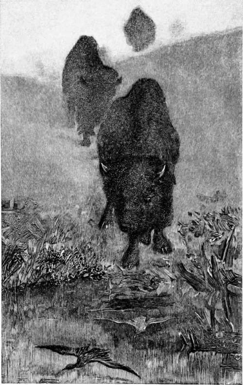

Hunting | by Archibald Rogers
I propose to give some hunting experiences of those days, if you will accompany me to Billings, on the Northern Pacific Railway, the nearest town to my ranch, and the Mecca to which the devout cattleman drives his wagon for supplies, I will introduce you to the foot-hills and mountains, and some of the adventures therein.
| Title | Hunting |
| Author | Archibald Rogers |
| Publisher | Charles Scribner's Sons |
| Year | 1896 |
| Copyright | 1896, Charles Scribner's Sons |
| Amazon | Hunting |
By Archibald Rogers, W. S. Rainsford Frederic Irland
Birge Harrison Harry, C. Hale Frank Russell
George Bird Grinnell
Typography By C. J. Peters & Son. Printed By Braunworth, Munn & Barber.
Through The Mist
Note
The chapters in this volume have appeared at different times in Scrib-ner's Magazine, and having been revised by their authors, are published now for the first time in book form.
 Hunting American Big Game
Hunting American Big Game- SOME eight or ten years ago * it was by no means difficult for one who knew where to go and how to hunt to get excellent shooting in Northwestern Wyoming. Large game was there moderately abundant, wit...
- Hunting American Big Game. Part 2
- Experience having taught me long ago that it was well-nigh impossible to get good specimens of all the different varieties of big game on any one trip, I made up my mind to devote a certain amount of ...
- Hunting American Big Game. Part 3
- I was much interested once in watching a band of eight rams, all of them old fellows. They would feed early in the morning, and then betake themselves to a large rock which stood on a grassy slope, wh...
- Hunting American Big Game. Part 4
- It was on the head of Wind River that I secured my largest head. The regularity of the points was somewhat marred, as the bull had evidently been fighting only a short time before I killed him. These ...
- Hunting American Big Game. Part 5
- We saw six fine rams (of course, now that we did not want any); they did not seem to regard us with any uneasiness, permitting us to get within murderous distance, and I looked at their leader with so...
- Hunting American Big Game. Part 6
- But instead of doing so, he discarded his rifle, and reached for her tail. Ah, I thought so! for, as he gave a yank, up came her head, her jaws flew open like clockwork, and a snort came forth. But ri...
- Hunting American Big Game. Part 7
- Our horses had been having pretty rough times lately, and they lost no time in storing away as much of the rich grass as they could hold. They had plenty of society too; for the slope was dotted here ...
- Camping And Hunting In The Shoshone
- WHEN only eighteen I killed, or helped to kill, my first buffalo; and having tried in vain, like many another greenhorn, to cut out his tongue (by forcing the clinched jaws apart, and coming to the Ir...
- Camping And Hunting In The Shoshone. Part 2
- O that a man would arise in me, That the man I am might cease to be! for he does not want the man he feels he is to cease to be. The man he now is he could afford to go on with forever; for he is a...
- Camping And Hunting In The Shoshone. Part 3
- An ordinary hill of less than two thousand feet looks Alpine when you are near its base, if that base be hidden in fog and the crown be clear. Many who read this can doubtless recall experiences on mi...
- Camping And Hunting In The Shoshone. Part 4
- Two years ago we went up that valley after a band of elk, and, having killed some, set traps for bear and hunted sheep there for a week or more. One day Frank Chatfield, my hunter, and I discovered wh...
- Camping And Hunting In The Shoshone. Part 5
- Perhaps there is nothing so intoxicating as a snow-slide; to shoot down, down, over the cool, smooth surface for a thousand, yes, sometimes two thousand feet at a time, and just enough of risk to make...
- Camping And Hunting In The Shoshone. Part 6
- My first ambition was naturally, as I have said, to kill a buffalo; that task once accomplished, and repeated to the point of satiety, the aim and object of my life, during my two months' summer rest,...
- Camping And Hunting In The Shoshone. Part 7
- Not much sport in that, so it seems to me now. And yet, after longing and longing even to see a big bear, and never seeing him; after finding, sometimes, the ground near our camp all torn up overnight...
- Camping And Hunting In The Shoshone. Part 8
- I have used almost all sorts of rifles, and have satisfied myself that a good repeater is the arm, —more accurate than an express, hitting hard enough to kill anything, and having nine shots instead o...
- Camping And Hunting In The Shoshone. Part 9
- Sit down when you shoot, if it is possible. There is no better position than an elbow on either knee; you can shoot fast and straight, and the position is high enough to carry your head and rifle abov...
- Camping And Hunting In The Shoshone. Part 10
- Though a guide is not a necessity, a couple of first-class packers are. Any man, with some little experience of roughing it, can guide a party fairly well; but no mortal man, not to the manner born, c...
- Climbing For White Goats
- THE white goat lives above timber line, among the rocks, along the narrow ledges, and in the fissures of towering precipices, by snow fields and glaciers. Really it is not a goat at all, but an antelo...
- Climbing For White Goats. Continued
- The goat is marvellously sure-footed, and from the day of its birth, is practised in climbing over the rocks; but it must not be imagined that it never falls from the insecure perches which it frequen...
- Sport In An Untouched American Wilderness
- MOST of the great solitude which two hundred years ago constituted the peninsula of Acadia is as undisturbed by civilized men as it was when British ships carried the French settlers away from its bor...
- Sport In An Untouched American Wilderness. Part 2
- During the nine weeks of our absence, were we lost and starving? No! We were having the pleasantest time of all our lives, and we fared sumptuously every day. It was an experience to make one feel tha...
- Sport In An Untouched American Wilderness. Part 3
- A most impressive exhibit of the terrific energy of the angered moose was written on a bushy mountain-side. Two bulls had met and fought. The record of the conflict was plain to all comers. A great sw...
- Sport In An Untouched American Wilderness. Part 4
- The following year, under somewhat similar circumstances, a single bullet killed another moose in his tracks. Our second hunting-trip, in the fall of 1895, was in the Bald Mountains, considerably f...
- Sport In An Untouched American Wilderness. Part 5
- The famous interior fishing-grounds of the United States are pretty nearly done for. In fact, nothing is so fatal to the fish as notoriety. But the resources of the remote waters of old Acadia are uni...
- A Kangaroo Hunt
- In the log-book of Captain Cook's first voyage around the world we find it recorded, under date of July 14, 1770, that Mr. Gore, who went out this day with his gun, had the good fortune to kill one o...
- A Kangaroo Hunt. Part 2
- For some time after arriving in Australia, I was almost in despair of being able to gratify my ardent desires in the way of kangaroo hunting. Indeed, the difficulty and uncertainty of the quest seemed...
- A Kangaroo Hunt. Part 3
- 10 cartridges; and of these we expected to make good use. A pleasant drive of thirty miles over the yellow plains, dotted here and there with graceful shioke and contorted honeysuckle trees, landed us...
- A Kangaroo Hunt. Part 4
- We had proceeded only a few hundred yards through the forest in making our detour, when we came upon a hard and well-beaten path with abundant kangaroo signs lying all about it. We had evidently stumb...
- A Kangaroo Hunt. Part 5
- The older generation of Australians have the strongest objection to consuming the flesh of the kangaroo, in any shape or form, a prejudice for which I could only account by supposing that they must ha...
- The Last Of The Buffalo
- In the floor, on either side of my fireplace, lie two buffalo skulls. They are white and weathered, the horns cracked and bleached by the snows and frosts and the rains and heats of many winters and s...
- The Last Of The Buffalo. Part 2
- The former range of the buffalo has been worked out with painstaking care by Dr. J. A. Allen, to whom we owe an admirable monograph on this species. He concludes that the northern limit of this range ...
- The Last Of The Buffalo. Part 3
- It is not only under stress of circumstances that the bison climbs. The mountain buffalo is almost as active as the mountain sheep, and was often found in places that tested the nerve and activity of ...
- The Last Of The Buffalo. Part 4
- Mr. Jones has sold a number of buffalo to persons in Europe, where there is considerable demand for them. It is to be hoped that no more of these domesticated buffalo will be allowed to leave the coun...
- The Last Of The Buffalo. Part 5
- To the Indians the buffalo was the staff of life. It was their food, clothing, dwellings, tools. The needs of a savage people are not many, perhaps; but whatever the Indians of the plains had, that th...
- The Last Of The Buffalo. Part 6
- About the walls of the piskun, now full of buffalo, were distributed the women and children of the camp, who, leaning over the enclosure, waving their arms and calling out, did all they could to frigh...
- The Last Of The Buffalo. Part 7
- The extirpation of the northern herd was longer delayed. No very terrible slaughter occurred until the completion of the Northern Pacific Railroad; then, however, the same scenes of butchery were enac...
- The Last Of The Buffalo. Part 8
- In the early days when the game was plenty, buffalo running was exhilarating sport. Given a good horse, the buffalo hunter's only other requisite to success was the ability to remain on its back till ...
- The Last Of The Buffalo. Part 9
- At length I saw my companion slowly bend forward over his horse's neck, turn, and ride back to me. He had seen the backs of two buffalo lying on the edge of a little flat hardly a quarter of a mile fr...
- The Last Of The Buffalo. Part 10
- In the far Northwest, in the Peace River district, there may still be found a few wood buffalo. Judging from reports of them which occasionally reach us from Indians and Hudson's Bay men, their habits...
- Postscript, 1896
- Since this estimate was made, the number of buffalo in the Yellowstone Park has seriously diminished. Up to May, 1894, there had never been any law governing this reservation. By the organic Park act ...
- At Saint Mary's
- PERMANENT camp had finally been made, and our four conical walls were pitched on the immediate bank of the St. Mary's River, a few hundred yards from the point where that stream gives outlet to the ...
- At Saint Mary's. Part 2
- Ten minutes from the time of our entrance into the timber, we were lost; and from this time on, for the next hour and a half, it was a game of hide-and-go-seek between us and that plain, blazed trail...
- At Saint Mary's. Part 3
- We finally reached the ridge, cautiously approached our point selected, and peered over. Nothing. Disappointed, but not very surprised, we passed on to a parallel ridge, a hundred yards farther,...
- At Saint Mary's. Part 4
- We had appropriated the guide to ourselves this day. He had told us so much about the abundance of sheep on this Kootenai Mountain, that we forgave him for his plain, blazed trail story of two days ...
- At Saint Mary's. Part 5
- We discussed the idea of watching by reliefs after this, but concluded that of the two evils we preferred taking chances with the fire; and so, climbing back to our bed, we curled up spoon fashion, ...
- At Saint Mary's. Part 6
- Look! Bang! Bang! Six badly frightened and unhurt big horns were scampering over the rocks. Bang ! Bang ! Bang ! Bang ! Bang! Bang ! A perfect fusillade rang out. Over a ridge and around ...
- Hunting Musk-Ox With The Dog Ribs
- In the seventh of July, 1893, I landed at Fort Rae, an isolated and insignificant station kept by a chief trader of the Hudson's Bay Company. Rae lies sixty miles north of the main body of the Great S...
- Hunting Musk-Ox With The Dog Ribs. Part 2
- An hour later we started on the grand hunt, in which only the best men engaged, the women and children, of course, remaining at the camps in the woods. There were eleven Indians in the party, with two...
- Hunting Musk-Ox With The Dog Ribs. Part 3
- I awakened next morning with a sense of weight upon my blanket; and my ears were greeted with a rushing roar caused by a northeast gale, which had covered everything inside our lodge, to a depth of a ...
- Hunting Musk-Ox With The Dog Ribs. Part 4
- On leaving Fort Rae, Johnnie had agreed to assist me in skinning the game killed; he now found that his own affairs would require all his attention. Esyuh helped me to skin two, while I finished the t...